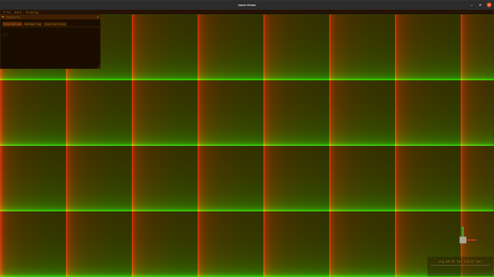
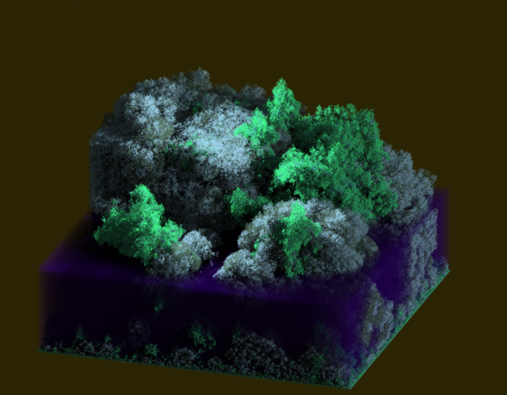
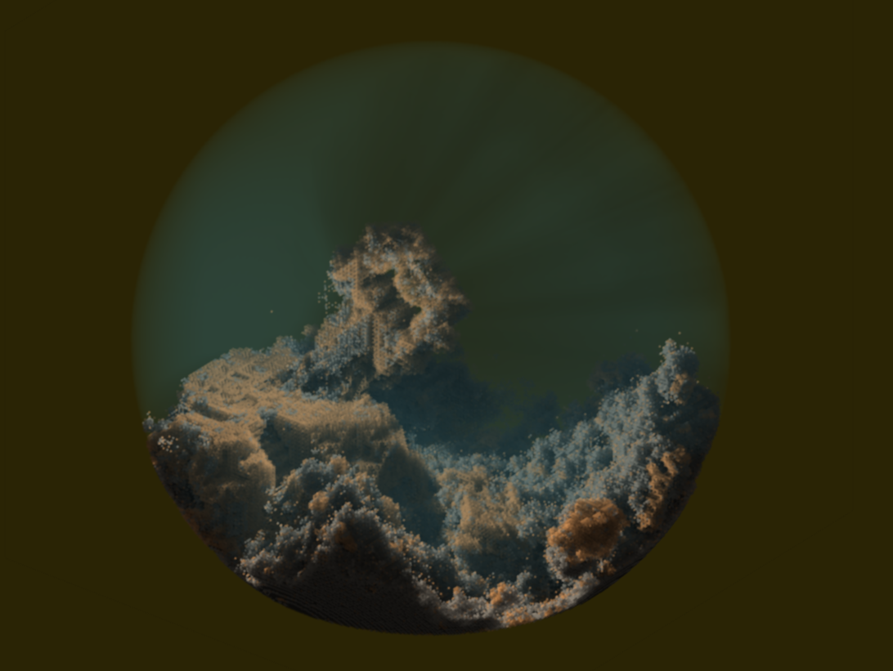
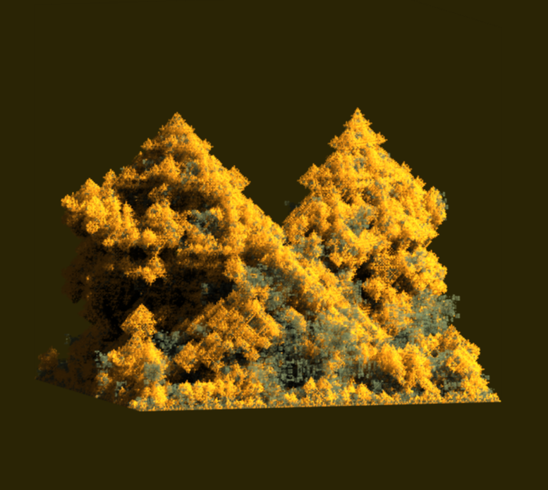
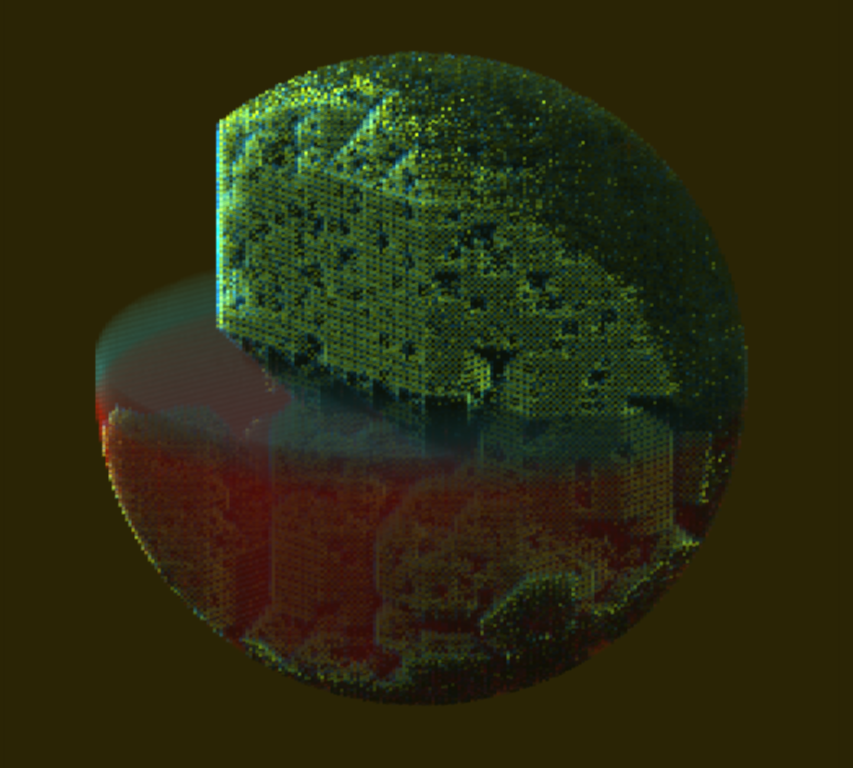

Voraldo v1.1
An Interactive Volume Editor

This version of Voraldo has seen some pretty major changes. There have been several rendering changes, some major changes to the lighting system including a few new types of lights, and a complete overhaul of the menu, which makes better use of some of the utilities provided by Dear ImGui. I have also incorporated Brent Werness's Voxel Automata Terrain algorithm, which I have converted to C++ from his Processing implementation. This is a very cool algorithm that generates highly varied forms within a voxel space.
Rendering Changes
The basic rendering algorithm has changed pretty significantly. Previously, the raycast operation took place every frame, regardless of whether or not it was neccesary - when the block is static, this becomes very redundant. Now, the rendering is done by a compute shader, which writes to a rectangular texture that is some multiple of the screen resolution. This has a few different effects - first, this multiple allows for a variable level of supersampling, which significantly reduces the aliasing that was present in the old renderer. Second, to keep this flexible enough to scale to arbitrary resolutions, the compute shader that renders the block is dispatched in 256x256 tiles (see below, colored by compute shader index), and then only when a flag has been set true by drawing, lighting, zoom, rotation or other state changes that require redrawing of the block. Any time a new frame is required, and this flag is not set true, the rendering takes place by putting two triangles up to cover the screen, using OpenGL's multisampling and linear texture filtering to see the benefit from the supersampling.
In addition to the structure around the rendering, the rendering itself has changed as well. I am making better use of the alpha channel by passing in a float which raises the normalized value in the alpha channel to some power - this has the effect of allowing for a wider range of usable transparency. Where previously, really anything over 10/255 was completely opaque, now much more of that range is usable. I have a slider to control this shader input, which allows it to be set anywhere between 0.5 (less usable range than before) and 3.0 (anything but the highest alpha values are very transparent). Most of the images on this page use the default power of 2.0.
Lighting Changes
The changes here centered around how the compute shader was invoked. Previously, it very closely mirrored the raycasting operation of the display, using a 2d invocation structure and shooting rays towards the block. Now, it is launched as a 3d structure, with the same number of invocations as there are voxels in the block. Instead of having each of the rays read and write over and over as they pass through the volume, now each voxel traces a ray to its location, which only requires reads from the color buffer, before writing to its own location in the lighting buffer. I have a parameter that I pass in that weights the effect of the alpha channel on the 'absorption' of the ray intensity, in a manner very similar to the alpha channel power I described above. This has had the effect of almost completely eliminating the weird aliasing that was present in the old lighting algorithm, and with some testing, I've found that the performance is about the same, roughly 50 microseconds to do the whole block on my desktop GPU.
This same structure is one that I had been considering in v1.0 for doing point lights, so my next step was to implement point lights. This is the first type of lighting that you can see divergence in, that is, the rays are non-parallel when you consider neighborhing voxels' invocations. The rays are computed by normalizing the vector from the light source to the location specified by the shader invocation index - there is a little bit of code to handle the case where the light is in the same location as the shader invocation, and some code to handle the light being inside or outside of the block. There are parameters for how it interacts with the alpha channel, as well as a distance decay factor to approximate the inverse square law (if desired, it can be set to zero, which will make 1/d^decay equal to one, and the absorption is the only thing that reduces ray intensity). I am still working out some minor issues with it, but I have seen good results so far. I am currently working on implementing cone lights based on a similar principle, but using a dot product to determine whether that vector lies within a solid angle of the light's initial location + direction.

There is also some approximation of global illumination, which also came from Brent Werness - the general idea is that for each voxel, from top to bottom, you shoot 9 rays up - pointing to the 3x3 voxels above the voxel being considered - if those rays escape the volume without hitting anything, you take some amount of light from the sky. If the rays hit something above some alpha threshold, you take some portion of the light value present in that voxel. This is a small thing which has made my lighting look much, much better. The compute shader for it has to be launched in horizontal 2d slices because of the order dependence - relatively simple to set up. The ambient occlusion operation, as well, has changed - before, it would equally weight the alpha contributions of all voxels in the cube-shaped neighborhood. Now, it will weight them also with a term that looks almost like a gaussian kernel, by looking at a ratio of the distance between the voxel being considered and the voxel for which the ambient occlusion is being computed over the maximum distance you could see in a neighborhood of that size.
Menu Overhaul
The menu now exists as four different, individually toggleable pieces. There is the top bar menu, the control window, the orientation widget and the FPS counter.
Currently there is a lot of placeholder stuff in the top bar menu, from the Dear ImGui example I derived it from, but the display dropdown has the toggles for each of the menu elements as well as an option to change which display the Voraldo window is displayed on.
The control window now has a tabbed layout which allows for a hierarchy of the different functions, broken out into the following categories: Shapes, Utilities, Lighting, Render Settings and Instructions. This change has fundamentally changed the structure of my menu code, making it much cleaner and more maintainable - I can add features very simply by adding another tab in the relevant place. Previously, I had to make changes in 5 different places to add a new feature, where now I only have to in 3 (the menu display code, the compilation and invocation of the shader in the GPU_Container class, and the shader itself).
The orientation widget came from an issue I had encountered when using v1.0 - at times, once you had rotated the block around enough, it could sometimes be difficult to predict where a given x, y, z coordinate was located just by looking at the block itself. To this end, I created a little set of axes which indicate the direction of the x, y and z vectors at any given time. To accentuate the orientaiton, it has some simple Phong shading applied. The FPS counter is very similar to before, but is now persistent regardless of where you are in the menu - it is displayed below the orientation widget, and shows a history of a few hundred frame's timings, as well as a computed average frame time and rate in frames per second.
Voxel Automata Terrain
Again, this algorithm creates some very cool shapes - most of the images on this page have use it to generate all or part of the voxel model. It is sort of like a 3d analog to the diamond square algorithm - it has the ability to store rules encoded in a base62 format, for which I had to figure out a C++ equivalent to java's BigInt functionality. This is a good addition to the codebase that I've been using for this and other projects, though, and it was a good exersize to convert it.

In order to be able to do multiple layers of this operation, as well as to implement a load operation which would respect the mask, I added another GPU-side buffer that could be copied from. This layering has some very cool potential, as you can see in a few of the images on this page - the VAT algorithm has 3 states, one of which I usually leave as clear - in order to create more elaborate color schemes, you might compute a VAT model, mask the non-transparent voxels, then compute another with different colors, while respecting the state of the masked voxels. This has the effect of drawing only to the previously transparent voxels.
There are a lot of things you can do with these operations, in conjunction with the simpler drawing shapes - you can see a couple here that have masked off a sphere, then cleared the contents of the block. Another cool thing is to draw an AABB with some transparent contents, to almost look like a layer of semi-transparent water or some other liquid. I really like the look of this, you can create like a little diorama in the space. I have a few more things planned, such as the ability to copy and paste the contents of an AABB within the confines of the voxel block. I'm still thinking through how this will be implemented, and what kind of interface I'm going to present to the user in order for them to have reasonable control over what they're doing. Also upcoming is a conversion from OpenGL to Vulkan, to hopefully overcome the compatiblity issues I have been having with image3D - I have thus far only been able to run Voraldo on the Mesa OpenGL driver, from what I can tell doing some testing on a few different machines, neither the Nvidia or AMD drivers seem to support it in the way I am using it. I have not made any headway solving this problem with the debug information I can get with glGet, I'm getting some very strange and seemingly self-contradictory information back.